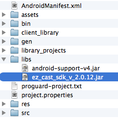

Android 4.0 and later.
EZCast SDK depends on Google Play Services and MediaRouter. To install/setup those library, please refer to following links respectively:
Copy the jar file (for example, ez_cast_sdk_v_2.1.1.jar) to the libs folder under your project root.

To find compatible devices, you need to use DeviceFinder and implements DeviceFinder.Listener interface to receive discovery events, such as onDeviceAdded() and onDeviceRemoved().
First of all, get the shared instance of DeviceFinder through getDefaultFinder().
deviceFinder = DeviceFinder.getDefaultFinder(getApplicationContext());
Implement DeviceFinder.Listener to receive discovery events.
private DeviceFinder.Listener listener = new DeviceFinder.Listener() {
@Override
public void onDeviceRemoved(DeviceFinder deviceFinder, DeviceInfo device) {
// update data model and UI if needed
}
@Override
public void onDeviceAdded(DeviceFinder deviceFinder, DeviceInfo device) {
// update data model and UI if needed
}
};
Before sending image to the device or playing video/audio, client needs to ask for permission via AuthenticationApi. You need to use AuthorizationApiBuilder to create AuthorizationApi instance and ask permission to display contents via requestToDisplay. There are bunch of callbacks, which are also setting up via AuthorizationApiBuilder.setAuthorizationListener.
@Override
protected void onResume() {
super.onResume();
authorizationApi = new AuthorizationApiBuilder(deviceInfo, this)
.setAuthorizationListener(new AuthorizationListener() {
@Override
public void authorizationIsDenied(AuthorizationApi arg0, DeniedReason arg1) {
}
@Override
public void authorizationIsGranted(AuthorizationApi arg0, int arg1, int arg2) {
}
}).build();
if (authorizationApi != null) {
authorizationApi.connect();
authorizationApi.requestToDisplay(0, 0);
} else {
// no authorization API means no authorization needed.
startToDisplay();
}
}
Client needs to disconnect from AuthorizationApi in order to release resources obtained by it.
@Override
protected void onPause() {
authorizationApi.cancelPendingRequest();
authorizationApi.disconnect();
authorizationApi = null;
super.onPause();
}
After the permission has been granted, client then can display contents via DisplayApi. To connect to display API, you need to use DisplayApiBuilder. There are callbacks regarding to display as well which of those are setup via DisplayApiBuilder. These callbacks are DisplayListener and ConnectionManager. Before displaying anything client also needs to call startDisplaying.
displayApi = new DisplayApiBuilder(deviceInfo, ExampleActivity.this)
.setDisplayListener(new DisplayListener() {
@Override
public void positionDidChange(DisplayApi arg0, int arg1,
int arg2) {
// TODO Auto-generated method stub
}
@Override
public void remoteRequestToDisconnect(DisplayApi arg0) {
// TODO Auto-generated method stub
}
@Override
public void remoteRequestToStartDisplaying(DisplayApi arg0,
int arg1, int arg2) {
// TODO Auto-generated method stub
}
@Override
public void remoteRequestToStopDisplaying(DisplayApi arg0) {
// TODO Auto-generated method stub
}
@Override
public void roleDidChange(DisplayApi arg0, Role arg1) {
// TODO Auto-generated method stub
}
})
.setConnectionManager(new ConnectionManager() {
@Override
public void onConnectionFailed(Api arg0, Exception arg1) {
// TODO Auto-generated method stub
}
}).build();
displayApi.connect();
displayApi.startDisplaying();
To send image data to the device, client should call sendJpegEncodedScreenData and the data must be encoded as JPEG.
Bitmap icon = BitmapFactory.decodeResource(getResources(), R.drawable.ic_launcher);
ByteArrayOutputStream outBuffer = new ByteArrayOutputStream();
icon.compress(CompressFormat.JPEG, 100, outBuffer);
try {
displayApi.sendJpegEncodedScreenData(new ByteArrayInputStream(outBuffer.toByteArray()), outBuffer.size());
} catch (Exception e) {
// TODO Auto-generated catch block
e.printStackTrace();
}
To stop displaying image, client can call stopDisplaying. Client should disconnect from DisplayApi when DisplayApi is no longer needed to release the resources obtained by the api instance.
@Override
protected void onPause() {
authorizationApi.cancelPendingRequest();
authorizationApi.disconnect();
authorizationApi = null;
if (displayApi != null) {
displayApi.stopDisplaying();
displayApi.disconnect();
displayApi = null;
}
super.onPause();
}
Before playing video/audio, you need to grant permission as displaying image through authorization APIs.
To play video or audio, you need to work with MediaPlayerApi and MediaPlayerStateListener.
To create MediaPlayerApi, you will need MediaPlayerApiBuilder and setup MediaPlayerStateListener to receive playback events, such as media duration, current position and so on.
mediaPlayerApi = new MediaPlayerApiBuilder(deviceInfo, this)
.setMediaPlayerStateListener(new MediaPlayerStateListener() {
@Override
public void mediaPlayerDidStart(MediaPlayerApi api) {
}
@Override
public void mediaPlayerDidStop(MediaPlayerApi api) {
setEnableSeekBar(false);
setEnablevVolumeControls(false);
}
@Override
public void mediaPlayerDidFailed(MediaPlayerApi api,
int resultCode) {
displayMessage("mediaPlayerDidFailed:"+resultCode);
}
@Override
public void mediaPlayerTimeDidChange(MediaPlayerApi api,
long time) {
updateTimeInfo(time);
}
@Override
public void mediaPlayerDurationIsReady(MediaPlayerApi api,
long duration) {
setEnableSeekBar(true);
setEnablevVolumeControls(true);
updateTimeInfo(0);
}
}).build();
if (mediaPlayerApi != null) {
mediaPlayerApi.connect();
}
To play media, just invoke MediaPlayerApi.play() and pass media URL to it. Playback info will be given through MediaPlayerStateListener if you setup a MediaPlayerStateListener via MediaPlayerApiBuilder.
mediaPlayerApi.play(this, mediaUrl, null, -1L, mediaTitle);
mediaPlayerApi.pause();
mediaPlayerApi.resume();
mediaPlayerApi.stop();
mediaPlayerApi.seek(positionInSecond);
if (mediaPlayerApi != null) {
mediaPlayerApi.stop();
mediaPlayerApi.disconnect();
mediaPlayerApi = null;
}
mediaPlayerApi.increaseVolume();
mediaPlayerApi.decreaseVolume();
The fastest way to develop an EZCast is override the sample program.
Just as a normal Android activity, you need to create a subclass of Activity and modify the AndroidManifest.xml as documented in Android's guides and documents.
In DeviceListActivity.java, you can find a snippet of code like this:
@Override
protected void onListItemClick (ListView l, View v, int position, long id) {
DeviceInfoFormater selectedItem = adapter.getItem(position);
Intent startSomething = new Intent(this, com.ezcast.example.ezcastsdkclient.ExampleActivity.class);
startSomething.putExtra("com.actionsmicro.ezcast.device_info", selectedItem.deviceInfo);
startActivity(startSomething);
}
You just need to change the class, com.ezcast.example.ezcastsdkclient.ExampleActivity.class, to your activity.
To obtain the DeviceInfo, you can get it from the intent extra. The extra name is "com.actionsmicro.ezcast.device_info".
@Override
protected void onCreate(Bundle savedInstanceState) {
super.onCreate(savedInstanceState);
setContentView(R.layout.activity_example);
deviceInfo = (DeviceInfo)this.getIntent().getExtras().get("com.actionsmicro.ezcast.device_info");
this.setTitle(deviceInfo.getName());
}
And then you are good to go to play with AuthenticationApi, DisplayApi and MediaPlayerApi which are mentioned in previous sections.